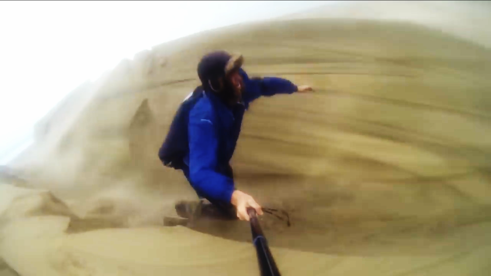

great outdoors
installation pour chambre à coucher, 2020.
Une (ré)appropriation de la théorie des quatre éléments, à l’ère des mutations écologiques. Une débâcle des oppositions entre l’intérieur et l’extérieur, l’intime et le politique, le proche et le distant, le micro et le macro. Dans l’espace d’une chambre à coucher, différents processus de transformation sont rendus sensibles et imbriqués : condensation, évaporation, incandescence électrique, sublimation, réactions exothermiques et endothermiques, capture-lecture audio et vidéo.
Les vidéos diffusées sur l'écran LCD ont été empruntées sur Youtube, Vimeo et autres plateformes d'hébergement. L'artiste n'en possède pas les droits.


